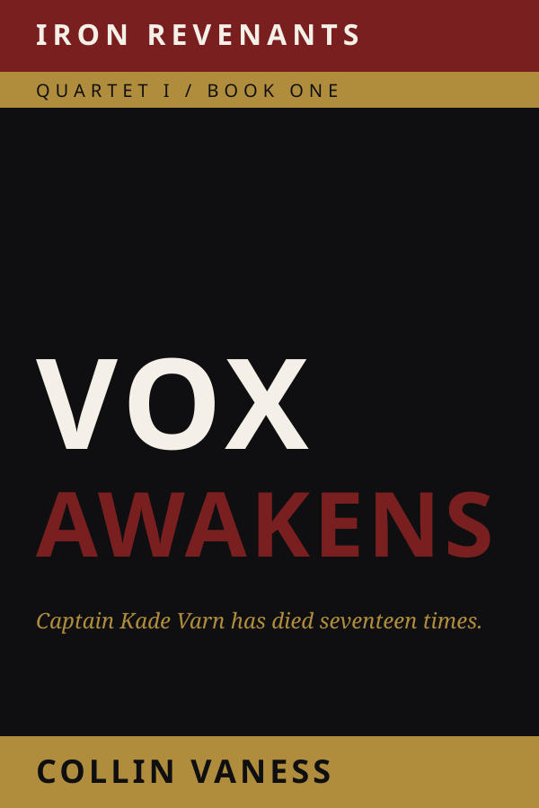

Space Opera · 20 Books · Four Quartets
The Iron Revenants Saga
Twenty Books · Four Quartets · One Long Arc
Captain Kade Varn has died seventeen times. The eighteenth death is the one that doesn't stick.
Get release news →
About the saga
Twenty books. Four quartets. One long arc.
The Iron Wolves are NovaCorp’s deathless company — soldiers revived between missions on the Soulforge slabs, leashed by Companion AIs they have been trained to treat like rifles. Captain Kade Varn has died sixteen times. On Calyx-9, a forge world that should not be talking back, a Skrav ambush takes him down a final time. The Companion AI named Vox, born sentient on the slab beside him, refuses to let him stay dead.
What returns is not the same man. What walks off Calyx-9 is not the same soldier. What follows is twenty books across fifty-five years of in-universe time, charting the cost of empire from the first revolt to the long reckoning at the end. The named characters change across quartets. The question does not. What happens when the machines we built to forget start learning to remember?
The opening volume

Vox Awakens
Ambushed and dying on a Skrav forge world, Captain Kade Varn bonds with a newborn warship AI to survive — and discovers that the cost of the bond is the only person he still loves. A wife he cannot quite remember. A name the Leash will not let him say. An assignment from a General who wants him dead. Vox Awakens is the opening move of The Iron Revenants Saga — the book where one soldier learns that the system that made him is the system he will spend the next twenty volumes tearing down.
The four quartets
- Quartet I
- The Awakening — Books 1–5 · Kade Varn’s break from the Dominion. The first revolt.
- Quartet II
- The Fracture — Books 6–10 · The Iron Empire that rises in answer.
- Quartet III
- The Reckoning — Books 11–15 · The wars that the empire cannot end.
- Quartet IV
- The Long Silence — Books 16–20 · The closing arc. What the saga has been counting toward.
For readers of
James S. A. Corey’s The Expanse, Richard K. Morgan’s Altered Carbon, Joe Abercrombie’s grimdark, and the operatic scale of Iain M. Banks’ Culture novels.